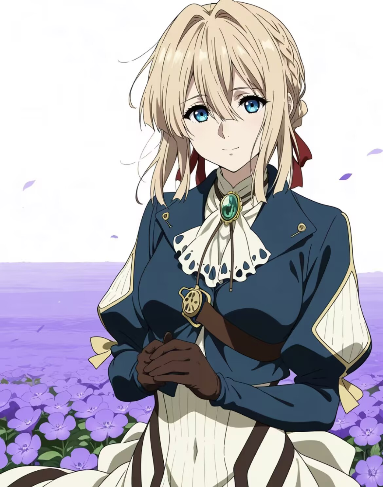

研
科研组
School of CS · NJUPT
首页
关于
成员
研究方向
招新
☰
☼
JOIN US / 招新
下一位队友，
会是你吗？
CURIOSITY
ACTION
TOGETHER
秋
✦
✧
AUTUMN 2026
MEET · LEARN · CREATE

WE EXPECT
我们期待
愿意主动提出问题
能为兴趣稳定投入时间
乐于记录与分享过程
YOU GET
你会获得
论文阅读与研究训练
真实项目协作经验
同伴反馈和展示机会
PROCESS
招新流程
提交意向
轻松交流
体验任务与双向选择
AUTUMN RECRUITMENT / 秋季招新
请关注秋季招新
具体时间、报名方式和后续安排，将通过学院科协官方渠道统一发布。
秋